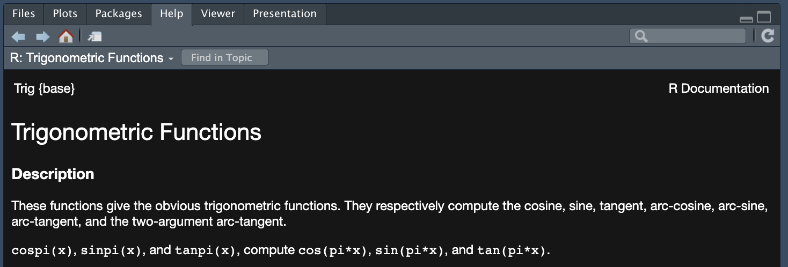

flowchart LR A[1. File] --> B[2. New File] B --> C[3. R script]
TutoRial - Part 1
Marine Ecosystem Dynamics
New script
As seen during the presentation, we will keep track of our progress. We thus need to open a new script following one of the option below.
flowchart LR A["⌘/Ctlr + ⇧ + N"]
R syntax
R is a programming language that use a simplified syntax. In this section, you will explore how to write a script and execute it.
But first some syntax information:
- Everything after
#is considered as a command and will not be executed. It is very important to write what we are doing, so we do not get lost next time we open our scripts.
# 2 + 2 will not work because of the #
2 + 2 # We should then annotate our script like this
#> [1] 4- Several lines of code can be written in one line but must be separated by
2 + 2
#> [1] 4
3 * 2
#> [1] 6
# This can also be written as follow:
2 + 2 ; 3 * 2
#> [1] 4
#> [1] 6- In R we can name a function, vector, or other object using
=or<-
my_vector <- c(1, 2, 3, 4)
my_function = function(x){x + 2}==is a logical function that can be translated as is equal to, contrarily is not equal to is written!=
2 + 2 == 4
#> [1] TRUE
3 * 2 == 4
#> [1] FALSE
3 * 2 != 4
#> [1] TRUEExercises
- Do these calculations in a new R script
- \ 2^7
Solution
2^7
#> [1] 128- \ cos(\pi)
Hint
?cos()
?pi()
Solution
cos(pi)
#> [1] -1- \ \sum_{1}^{100} i
Hint
Operations can take place for an entire vector
Solution
vector <- seq(from = 1, to = 100, by = 1) # Create a vector from 1 to 100
sum(vector) # Calculate the sum
#> [1] 5050- Create a parameter
x1that equals to 5 and a parameterx2that equals to 10
Solution
x1 <- 5 ; x2 <- 10- Is 2
x1equivalent tox2?
Solution
2*x1 == x2
#> [1] TRUEFunctions
As seen during the lecture, R works with functions that can:
- Already be implemented in base R
- Comming from another package
- Created by the user
We will see these three examples in this section, but first it is important to remember that the typical structure of a function is function(argument_1, ...). It is impossible to remember what are all the argument, but fortunately R helps us:
- Using
help()or?
help(topic = "sin")
?sin
- Using
example
example(sum)
#>
#> sum> ## Pass a vector to sum, and it will add the elements together.
#> sum> sum(1:5)
#> [1] 15
#>
#> sum> ## Pass several numbers to sum, and it also adds the elements.
#> sum> sum(1, 2, 3, 4, 5)
#> [1] 15
#>
#> sum> ## In fact, you can pass vectors into several arguments, and everything gets added.
#> sum> sum(1:2, 3:5)
#> [1] 15
#>
#> sum> ## If there are missing values, the sum is unknown, i.e., also missing, ....
#> sum> sum(1:5, NA)
#> [1] NA
#>
#> sum> ## ... unless we exclude missing values explicitly:
#> sum> sum(1:5, NA, na.rm = TRUE)
#> [1] 15For the functions that comes from another package, we first need to install the new packages. The most common way to do so is by executing install.packages("Package_Name"). Then everytime you open a new session and you want to use the package, start the script by executing library(Package_Name).
Finally, if you really do not find a suitable function in a package, or want to create your own function, you can create your functions following this general structure:
my_function <- function(<argument_1>, <argument_2>, ...){
<here comes the definition of my function>
return(<output of the definition>)
}Exercises
- What is the function
log()doing and from were does this function come from (base R, other packages)?
Solution
?log() #It takes the natural logarithm of the value, it comes from base R
log(10) - What are the mandatory arguments for the function
plot()
Solution
?plot() # the coordinates points x and y are needed- Install the package named
readrand load it
Solution
install.packages("readr")
library(readr)- Is there help associated with the functions from a loaded package?
Hint
The function read_csv comes from this package
Solution
?read_csv # Yes, there is also help for the imported functionsVectors
R works with vector from which we can do our calculations. There is several way to create a vector:
- Using
c()values are added next to each other
c(1, 2, 1, 4) # It works with integers (round numbers)
#> [1] 1 2 1 4
c(1.1, 2.4, pi) # It works with floats (decimal numbers)
#> [1] 1.100000 2.400000 3.141593
c("chocolate", "ice-cream") # It works with character
#> [1] "chocolate" "ice-cream"
c(TRUE, FALSE) # It works with logical variables
#> [1] TRUE FALSE- Using
rep()to repeat the same values
rep(3, 2) # It works with integers
#> [1] 3 3
rep(3.2, 3) # It works with floats
#> [1] 3.2 3.2 3.2
rep("chocolate", 2) # It works with character
#> [1] "chocolate" "chocolate"
rep(TRUE, 3) # It works with logical variables
#> [1] TRUE TRUE TRUE- For numeric values (integers and floats) we can also use
seqthat produce a sequence from a value to another one
seq(from = 2, to = 6, by = 2)
#> [1] 2 4 6
seq(from = 0, to = 1, by = 0.2)
#> [1] 0.0 0.2 0.4 0.6 0.8 1.0
Tip
if you want to do a sequence using by = 1 it is easier to write it like this: from:to
1:10
#> [1] 1 2 3 4 5 6 7 8 9 10
seq(from = 1, to = 10, by = 1) == 1:10
#> [1] TRUE TRUE TRUE TRUE TRUE TRUE TRUE TRUE TRUE TRUE- Finally, we can also combine vector together
c(c(2, 1), seq(from = 2, to = 4, by = 0.5), rep("a", 2))
#> [1] "2" "1" "2" "2.5" "3" "3.5" "4" "a" "a"Exercises
- Create a vector
v1that contains the values 3, 5, 1, 2, 6
Solution
v1 <- c(3, 5, 1, 2, 6)- Create a vector
v2that contains four times the values 3, 5, 1, 2, 6
Solution
v2 <- rep(v1, 4)- Create a vector
v3that repeatsTRUE,FALSE5 times
Solution
v3 <- rep(c(TRUE, FALSE), 5)- Create a vector
v4that goes from 10 to 200
Solution
v4 <- 10:200- Create a vector
v5that containsv1,v2,v3and 2 timesv4
Solution
v5 <- c(v1, v2, v3, rep(v4, 2))Tibbles
Now that we have seen how to create vectors, we can start combining them in a dataframe, called tibble.
- First, load (and install if it is not done
install.packages("tibble")) thetibblepackage.
library(tibble)
?tibble- Second, fill a tibble
tibble(Plankton_type = c(rep("Zooplankton", 6), rep("Phytoplankton", 6)),
Biomass = c(65, 12, 42, 51, 23, 72, 10, 11, 21, 14, 23, 13))
#> # A tibble: 12 × 2
#> Plankton_type Biomass
#> <chr> <dbl>
#> 1 Zooplankton 65
#> 2 Zooplankton 12
#> 3 Zooplankton 42
#> 4 Zooplankton 51
#> 5 Zooplankton 23
#> 6 Zooplankton 72
#> 7 Phytoplankton 10
#> 8 Phytoplankton 11
#> 9 Phytoplankton 21
#> 10 Phytoplankton 14
#> 11 Phytoplankton 23
#> 12 Phytoplankton 13- Then, we can access the individual vector (or column of the tibble) using
$or[[]]
example <- tibble(Plankton_type = c(rep("Zooplankton", 6), rep("Phytoplankton", 6)),
Biomass = c(65, 12, 42, 51, 23, 72, 10, 11, 21, 14, 23, 13))
example$Plankton_type
#> [1] "Zooplankton" "Zooplankton" "Zooplankton" "Zooplankton"
#> [5] "Zooplankton" "Zooplankton" "Phytoplankton" "Phytoplankton"
#> [9] "Phytoplankton" "Phytoplankton" "Phytoplankton" "Phytoplankton"
example[[2]]
#> [1] 65 12 42 51 23 72 10 11 21 14 23 13Exercises
- Create a tibble named
dfthat look like this:
| Genus | Station | Abundance |
|---|---|---|
| Acartia | B1 | 65.6 |
| Centropages | B1 | 32.6 |
| Centropages | B1 | 68.8 |
| Acartia | B1 | 91.0 |
| Temora | B1 | 53.4 |
| Temora | B1 | 89.6 |
Solution
df <- tibble(Genus = c("Acartia", "Centropages", "Centropages", "Acartia", "Temora", "Temora"),
Station = "B1",
Abundance = c(65.6, 32.6, 68.8, 91.0, 53.4, 89.6))- Create a vector
outputthat correspond to the columnAbundanceof the tibbledf
Solution
output <- df$Abundance # or df[[3]]Importing data
Often, we are not preparing our dataset in R. Thus, importing dataset is essential to process our data. To do so, we will see how to use the read_* function from the readr package.
Tip
When saving our spreadsheet, it is always a good idea to save the document as .csv
A typical data import look like this
- Set the working directory with its absolute path. So every time you want to import/export, you can use the relative path writen as
./...
setwd("/Absolute/Path/To/Working/Directory") - Load the
readrpackage
library(readr)- Import you dataset
df <- read_csv("./The/relative/path/to/my/dataset.csv")- Examine the data if the importation worked well
str(df)Exercises
- Import and inspect the dataset
zooplankton_seasonality.csv
Solution
plankton_seasonality <- read_csv("/Users/kinlan/OneDrive - Stockholm University/PhD/Teaching/MarineEcosystemDynamics2023/Tutorial/Data/zooplankton_seasonality.csv")
str(plankton_seasonality)or
setwd("/Users/kinlan/OneDrive - Stockholm University/PhD/Teaching/MarineEcosystemDynamics2023/Tutorial")
plankton_seasonality <- read_csv("./Data/zooplankton_seasonality.csv")
str(plankton_seasonality)
Tip
Sometimes it is tricky to import directly in the good format, so it might be better to specify that the new dataset is a tibble
plankton_seasonality <- as_tibble(plankton_seasonality)
str(plankton_seasonality)
#> tibble [2,956 × 7] (S3: tbl_df/tbl/data.frame)
#> $ Month_abb : chr [1:2956] "Jan" "Jan" "Jan" "Jan" ...
#> $ Year : num [1:2956] 2009 2009 2009 2009 2009 ...
#> $ Station : chr [1:2956] "BY15" "BY31" "BY5" "BY15" ...
#> $ Coordinates: chr [1:2956] "20.05000/57.33333" "18.23333/58.58812" "15.98333/55.25000" "20.05000/57.33333" ...
#> $ Group : chr [1:2956] "Copepoda" "Copepoda" "Copepoda" "Copepoda" ...
#> $ Taxa : chr [1:2956] "Acartia" "Acartia" "Acartia" "Centropages" ...
#> $ Biomass : num [1:2956] 6.65 1.82 5.56 5.74 1.23 ...- How many rows and columns are there in this dataset?
Solution
nrow(plankton_seasonality)
#> [1] 2956
ncol(plankton_seasonality)
#> [1] 7- Write the dataset
dfthat you created in your working directory
Solution
write_csv(df, file = "./Data/df.csv")